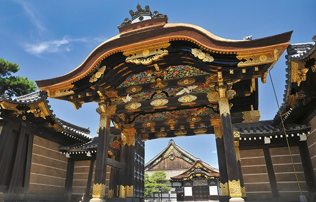

Rokuon-ji, czyli Złoty Pawilon
Najbardziej rozpoznawalny budynek w Kioto. Złoty Pawilon jest świątynią zen. Obecna budowla pochodzi z 1955 roku. Jest to obowiązkowy punkt wycieczki po Kioto. Budynek w całości pokryty jest złotem i pięknie mieni się w słońcu. Na uwagę zasługuje również staw znajdujący się w pobliżu oraz otaczający pawilon oryginalny ogród w japońskim stylu.
Ginkaku-ji, czyli Srebrny Pawilon
Wyjątkowa budowla, otoczona równie wyjątkowym ogrodem. Została wybudowana na zlecenie szoguna Ashikagi Yoshimasy, współcześnie uznawana jest za świątynię miłosierdzia. Początkowo Ginkaku-ji miał być posrebrzany, nigdy jednak nie zrealizowano tego założenia. Mimo to nazwa Srebrny Pawilon pozostała.
Ryōan-ji i kamienny ogród
To jedna z buddyjskich świątyń w Kioto, znajdująca się na liście światowego dziedzictwa UNESCO. Swoją popularność zawdzięcza przede wszystkim znajdującemu się na terenie obiektu kamiennemu ogrodowi, który służy do medytacji zen. Kamienny ogród składa się z piętnastu dużych głazów porośniętych mchem. Ziemia dookoła nich posypana jest drobnym żwirem, który jest starannie grabiony. Ze względu na duże zainteresowanie turystów, obecnie trudno tu o wyciszenie i spokój, jednak właśnie dla takich celów powstało to miejsce.
Dzielnice gejsz w mieście Kioto
Ponto-chō, Kamishichiken, Gion Kōbu, Gion Higashi i Miyagawa-chō nazywane są kwartałami gejsz. To właśnie w tych pięciu dzielnicach Kioto można spotkać gejsze, które co roku organizują festiwale i przedstawienia teatralno-taneczne , w których mogą wziąć udział również odwiedzający miasto turyści. W Ponto-chō od 1872 roku organizowany jest festiwal tańca Kamogawa Odori, z kolei w Gion Kōbu znajduje się najpopularniejsza herbaciarnia w Japonii o nazwie Ichiriki.
Las bambusowy Sagano w dzielnicy Arayashima

Las bambusowy stał się jedną z najciekawszych atrakcji turystycznych w Kioto. To również jedna z wizytówek Japonii . Niezwykłe miejsce, które oczarowuje swoim wyglądem i niepowtarzalnością. Wstęp jest całkowicie darmowy, a dla odwiedzających wydzielona jest wąska ścieżka, z obu stron otoczona dużymi łodygami bambusów.
Zamek Nijō

Jedno z miejsc w Japonii, w których można na własne oczy zobaczyć tzw. „słowiczą podłogę” , skrzypiącą przy każdym kroku. Szoguni chronili się w ten sposób przed nieproszonymi gośćmi. Zamek otoczony jest również pięknym ogrodem, wartym zwiedzenia.
Stare Miasto w Kioto
Stare Miasto w japońskim Kioto złożone jest z wąskich uliczek i głównie drewnianych zabudowań, ma jednak niesamowitą atmosferę. Przy okazji wizyty w mieście warto się tam wybrać i bliżej przyjrzeć architekturze.